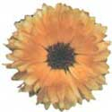
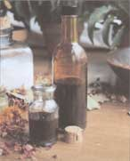
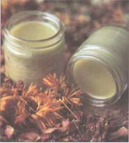
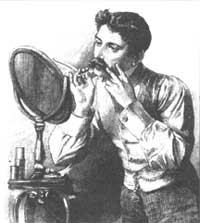

HERBALIST'S NOTEBOOK
Corinne Martin
Herbal concoctions make perfect gifts and help ease gift-givers through the holidays.
Making holiday gifts from natural herbs and ingredients is an uplifting - and inexpensive - way to offer a bit of earthy wealth to the family and friends in your life. Best of all, you'll be able to shop for many of the ingredients right in your own kitchen or garden.
The ones you don't already own can be purchased from local health-food stores. (Ask the manager or clerk to order them for you if you can't find them.) I usually invite a bunch of friends over every year for a "gift-making" party; that way we can share our supplies and experience while gratefully avoiding hectic holiday shopping. Don't forget to make extra gifts for yourself. These herbal products are an ideal way to pamper yourself - something you'll probably need as the holiday season begins to wind down.
This soothing and absorbent powder is excellent for all ages. It is also simple enough for children to put together themselves, providing they are old enough to run a blender and read measurements. It contains no talc, so it isn't irritating to mucous membranes if inhaled, and it can be scented with the pure essential oils of your choice.
Use equal parts (I recommend two cups) of:
clay powder (absorbs and balances the skin)
slippery elm powder (absorbs and soothes)
cornstarch (absorbs)
dried rose petals ground to powder (acts as an astringent)
essential oils (adds pleasant scent)
Place dried rose petals in your blender (a small handful at a time) and blend at high speed until they become a fine powder. Repeat with another batch until they become a fine powder. Repeat again with the rest of the petals.
Into a large bowl, sift together all of the dry ingredients (powders of slippery elm, clay, roses, and cornstarch). Then sprinkle 15 to 20 drops of essential oil of your choice onto the dry mix, and work this into the powder until it is thoroughly blended. Sift again so that powders and oil mix evenly and then pour the powder into a glass jar for gift-giving. The jar should be airtight so that the essential oils don't evaporate or lose their potency. Place a large cotton ball or a fluffy powder puff on top.
To use: Dust body liberally after bathing.
This syrup is made from herbs that help break up chest congestion and expel it from the body, soothe irritated mucous membranes, and quiet a cough. The ingredients are nontoxic; the only side effect of a child accidentally ingesting too much will be a temporary rise in blood sugar due to the honey base.
Herbs for this syrup can be harvested in areas around your home and in the family garden. Or purchase already cut and dried herbs from a health-food store.
red clover blossoms (acts as decongestant and expectorant, boosts immunity)
violets (similar to red clover)
coltsfoot leaves (acts as decongestant, expectorant, and respiratory tonic)
mullein leaves (acts as respiratory tonic, decongestant, expectorant, and mild sedative to respiratory tract)
Wild Cherry bark (acts as cough suppressant)
licorice root (soothes irritated membranes)
honey, or rice, or maple syrup
Proportions of the herbs may vary according to what you have on hand. Generally I use eight ounces of dried herbal mixture, half of which should be the white pine bark. I also use eight ounces of honey as the base of this syrup. However, do not give honey to children under one year of age.
Honey sometimes has botulism bacteria, and infants do not yet have the developed immune system to break that bacteria down. For infants I recommend using rice syrup or maple syrup instead (do refrigerate between uses).
Place mixed dried herbs into a crock pot or saucepan. Pour just enough honey over this to cover the herbs (you may have to add a bit more later as the honey liquifies and drains down into the herbs); stir as best you can. Turn on stove to lowest heat and allow herbs to sit for at least four hours, stirring occasionally. Do not allow the mixture to boil or the herbs will lose some of their medicinal properties and the syrup will be too thick.
When enough time has elapsed, strain the herbs and syrup through a sieve lined with a double thickness of cheesecloth to remove all plant particles. Pour into bot tles, allow to cool, and replace lid. Label and store.
To use: Drink 1/2 to 1 teaspoon per dose every two to three hours. If illness persists after 48 hours, see a physician.
This salve can be made from some of the wildflowers and weeds frequently found surrounding homes and gardens. It can be used for healing minor skin problems, including cuts or scratches, minor burns, insect bites, sunburn, simple rashes, or dry skin. The salve also works well as a lip balm, preventing lips from getting chapped over the winter.
Preparation is easy and takes very little time, and the product is safe enough so that young children can be given their own "boo-boo" salve to use whenever they need it.
calendula blossoms (acts as astringent and antiinflammatory)
comfrey leaves (speeds wound healing)
chickweed herb (soothes skin)
violet herb (soothes skin and promotes healing)
plantain leaves (acts as astringent)
olive or almond oil
beeswax
Pack the dried herbs of your choice into a jar in whatever proportions you desire (one cup of dried herbs packed tightly into a jar will give you roughly eight ounces of herbal salve).
Pour just enough oil over the herbs to cover them (start with eight ounces and add more if necessary). Then add a small amount of vitamin E oil to this mixture to help prevent rancidity. (I generally add approximately one part vitamin E oil to eight parts herbal mixture; for eight ounces of olive oil, you would add one ounce of vitamin E oil). Replace the jar lid and place the jar in a warm spot, such as by the kitchen window or against baseboard heat vents.
Allow the mixture to set for 10 to 14 days. Then strain the oil through a sieve of cheesecloth and express the plant material (squeeze out the excess moisture) to remove all of the extra herbal oil. Measure the herbal oil in a glass measuring cup and write down the measurement. Place the oil into a saucepan on low to medium heat and add one quarter of the amount of oil in beeswax. For example, if you have eight ounces of herbal oil, add two ounces of beeswax.
Heat and stir just until all the beeswax has melted. Pour the melted mixture into jars and allow to cool before replacing lids. Label the jars and tie on ribbons.
To use: Apply liberally to any minor skin irritation.
SOAKING IN SALTS
Aching, tired muscles are nothing that a long bath won't cure. Toss in a few handfuls of homemade bath salts for extra relief.
This luxurious bath addition soothes tired and aching muscles, especially after shoveling snow or skiing. It also helps stimulate skin and is generally relaxing.
1 cup Epsom salts (soothes aching muscles; draws toxins from skin)
2 cups borax (provides minerals)
sea salt (draws out toxins)
1/4 cup clay powder (draws out toxins)
essential oil (s cents the mixture)
Into a large bowl, pour borax, Epsom salts, and sea salt. Add clay powder and mix thoroughly. Add essential oil onto the dried mixture and work thoroughly with your fingers. Place bath salts into a decorative jar and label.
To use:Add a double handful of bath salts to very warm (not hot) water and soak in the mixture for 10 to 15 minutes. Use no more than once a week.
Men, young and old, will love this rich aftershave. It has a spicy scent and is astringent enough to tone facial skin. It will also help heal any small nicks or cuts on the face.
several handfuls of bay leaves (fresh or dried leaves act as astringent)
1 to 2 tablespoons of whole cloves (gives spicy scent)
1 to 2 cinnamon sticks (helps to control bleeding)
enough dark rum to pour over the herbs (acts as astringent and antiseptic)
a few drops essential oil of bay (s cents)
Pack a jar (with a screw-top lid) with as many bay leaves as will fit. Add a tablespoon or two of whole cloves and a cinnamon stick into the jar. Pour just enough dark rum over the herbs to cover the mixture. Then add a few drops of essential oil of bay, replace the lid, and set aside for 10 to 14 days. (If you have the time, allow the mixture to steep even longer; the longer the steeping, the stronger the scent and potency of the aftershave.)
At the end of the soaking time, strain the liquid through a sieve and a coffee filter to remove all of the plant material. Bottle the liquid and label. If you like, you can add a cinnamon stick and a few bay leaves for decorative effect. Tie a ribbon around the bottle and it is ready to give.
To use: Just splash on after shaving.
This mixture of dried herbs makes a pleasant-tasting tea that is enjoyable for folks from childhood on up and can be used for its flavor alone if you like. But it also make a good healing tea as well.
All of the herbs below act in one way or another to help settle digestion and relieve the ill effects of having indulged in a bit too many holiday cookies and cakes. It can also help to relieve the symptoms of mild intestinal flu. You may use all of the herbs mentioned below or pick and choose those that appeal to you or are most readily available to you.
catnip leaves (settles upset tummies; helps to relax)
peppermint leaves (helps stimulate digestion)
chamomile flowers (reduces inflammation; useful for stomach irritation or preulcer states)
ginger root (relieves cramping and intestinal gas)
fennel seeds (relieves cramping, gas)
licorice root (soothes and relieves irritated membranes)
marshmallow root (also known as
Althaea officinalis , which is related to Hollyhock. This plant is used to both soothe and protect membranes)
Place equal weights of herbs into a large bowl and mix until thoroughly blended. Pack the mixture into a jar and secure lid. If giving the herbal blend as a gift, you might secure a ribbon around the top of the jar and attach a tea ball or teaspoon. Also, attach a tag to the jar with instructions and a note about tea's benefits.
To use: Place one heaping teaspoon of the herb blend into a cup (in a tea ball) and pour boiling water over the herbs. Allow to steep for five minutes, then remove the plant material and drink while warm. If desired, add a little honey. The tea can be taken every hour or so until symptoms abate.
Editor's Note: Corinne Martin is a graduate of the Institute of Traditional Herbal Medicine in Santa Fe, NM. She is also a certified clinical herbalist and author of Earthmagic: Finding and Using Medicinal Herbs , available from Countryman Press in Woodstock, VT
|
 White pine bark cough syrup will quiet coughs and soothes irritated throats. |
 An herbal salve, made of herbs, oil, and beeswax, heals minor skin irritations and chapped lips. |
 |
|
 |
|
|